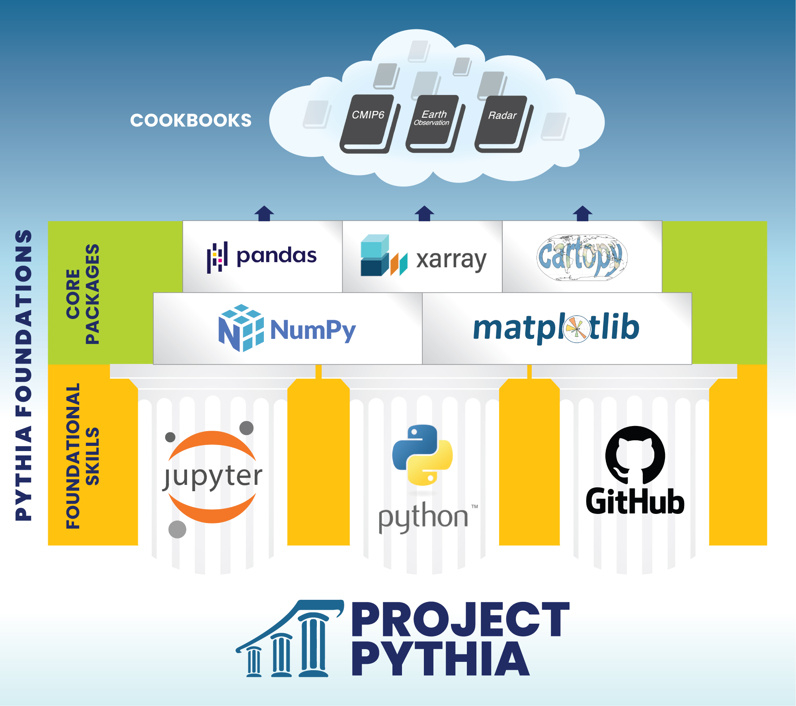

Overview

You’ve made it to the Core Packages section of the book!
As you might know by now that Python is a programming language. To make your job easier, developers of this programming language provide users like you with libraries (or packages). Core libraries will help you with fundamental numerical functions, and high-level libraries will help you efficiently analyze and visualize your data. Some of these libraries are used all across the Python community, while others are domain-specific. Read below to learn more about core and high-level libraries, and domain-specific libraries of the geoscience community. We suggest that new users start with the Foundational Skills section in order to get the most out of the tutorials below.
Core libraries
Most geoscience data analysis involves working with numerical arrays. The default library for dealing with numerical arrays in Python is NumPy. It has some built in functions for calculating very simple statistics (e.g. maximum, mean, standard deviation), but for more complex analysis (e.g. interpolation, integration, linear algebra) the SciPy library is the default. If you’re dealing with particularly large arrays, Dask works with the existing Python ecosystem (including NumPy) to scale your analysis to multi-core machines and/or distributed clusters (i.e. parallel processing).
Another common feature of geo-data science is time series analysis. The Python standard library comes with a datetime package for manipulating dates and times. NumPy also includes a datetime64 module for efficient vectorized datetime operations and the cftime library is useful for dealing with non-standard calendars.
When it comes to data visualization, the default library is Matplotlib. As you can see at the Matplotlib gallery, this library is great for any simple (e.g. bar charts, contour plots, line graphs), static (e.g. .png, .eps, .pdf) plots. The Cartopy library provides additional plotting functionality for common geographic map projections.
High-level libraries
While pretty much all data analysis and visualization tasks could be achieved with a combination of the core libraries, their flexible, all-purpose nature means relatively common/simple tasks can often require quite a bit of work (i.e. many lines of code). To make things more efficient for data scientists, the scientific Python community has therefore built a number of libraries on top of the core stack. These high-levels libraries aren’t as flexible – they can’t do everything like the core stack can – but they can do common tasks with far less effort.
The most popular high-level data science library is undoubtedly Pandas.
The key advance offered by Pandas is the concept of labeled arrays.
Rather than referring to the individual elements of a data array using a numeric index
(as is required with NumPy),
the actual row and column headings can be used.
That means information from the cardiac ward on 3 July 2005
could be obtained from a medical dataset by asking for data['cardiac'].loc['2005-07-03'],
rather than having to remember the numeric index corresponding to that ward and date.
This labeled array feature,
combined with a bunch of other features that streamline common statistical and plotting tasks
traditionally performed with SciPy, datetime and Matplotlib,
greatly simplifies the code development process (read: less lines of code).
One of the limitations of Pandas is that it’s only able to handle one- or two-dimensional (i.e. tabular) data arrays. The Xarray library was therefore created to extend the labelled array concept to x-dimensional arrays. Not all of the Pandas functionality is available (which is a trade-off associated with being able to handle multi-dimensional arrays), but the ability to refer to array elements by their actual latitude (e.g. 20 South), longitude (e.g. 50 East), height (e.g. 500 hPa) and time (e.g. 2015-04-27), for example, makes the Xarray data array far easier to deal with than the NumPy array. As an added bonus, Xarray also has built in functionality for reading/writing specific geoscience file formats (e.g netCDF, GRIB) and incorporates Dask under the hood to make dealing with large arrays easier.
You will occasionally find yourself needing to use a core library directly (e.g. you might create a plot with Xarray and then call a specific Matplotlib function to customise a label on that plot), but to avoid re-inventing the wheel your first impulse should always be to check whether a high-level library like Pandas or Xarray has the functionality you need. Nothing would be more heartbreaking than spending hours writing your own function using the netCDF4 library for extracting the metadata contained within a netCDF file, for instance, only to find that Xarray automatically keeps this information upon reading a netCDF file. In this way, a solid working knowledge of the geoscience stack can save you a lot of time and effort.
Domain-specific libraries
So far we’ve considered libraries that do general, broad-scale tasks like data input/output, common statistics, visualisation, etc. Given their large user base, these libraries are usually written and supported by large companies/institutions (e.g. the MetOffice supports Cartopy) or the wider PyData community (e.g. NumPy, Pandas, Xarray). Within each sub-discipline of the geosciences, individuals and research groups take these general libraries and apply them to their very specific data analysis tasks. Increasingly, these individuals and groups are formally packaging and releasing their code for use within their community. For instance, Andrew Dawson (an atmospheric scientist at Oxford) does a lot of EOF analysis and manipulation of wind data, so he has released his eofs and windspharm libraries (which are able to handle data arrays from NumPy or Xarray). Similarly, a group at the Atmospheric Radiation Measurement (ARM) Climate Research Facility have released their Python ARM Radar Toolkit (Py-ART) for analysing weather radar data.
A great place to start learning about use-cases for domain-specific libraries across the geosciences is the Pythia Cookbook Gallery. Also check out the Pythia Resource Gallery and try filtering by domain. The Python for Atmosphere and Ocean Science (PyAOS) package index attempt to keep track of the domain-specific libraries in these subfiels.
Tutorials
NumPy: Core package for array computing, the workhorse of the Scientific Python stack
Matplotlib: Basic plotting
Cartopy: Plotting on map projections
Datetime: Dealing with time and calendar data
Pandas: Working with labeled tabular data
Data formats: Working with common geoscience data formats
Xarray: Working with gridded and labeled N-dimensional data